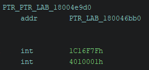
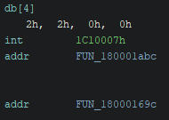
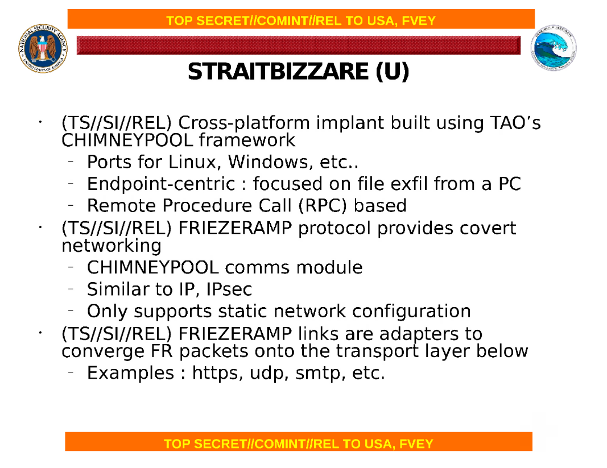
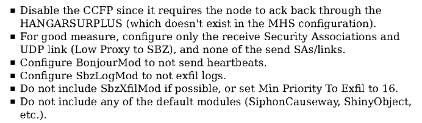

Overview
In a Twitter thread discussing this sample 1, the consensus is unanimous towards this sample being connected to Equation Group.
Based on the following indicators, I strongly agree:
Technical clues
DANDERSPRITZ
DANDERSPRITZ is one of the tools present in the Shadow Brokers' "Lost In Translation" cache of stolen NSA data.
In essence, DANDERSPRITZ is a modular, interactive remote collection tool that provides a scriptable shell-like interface to operators.
After having examined one of the DANDERSPRITZ implant binaries 2, it is evident that DANDERSPRITZ was
built on the same core framework that our binary of interest was built on.
For starters, API descriptor structures and module structures are present in the .data section:


Several API implementations are registered in DANDERSPRITZ with similar functionality and the same API IDs (but different implementation IDs!) compared to our sample.
For example, DANDERSPRITZ registers an API implementation for dynamically loading additional modules from PE files.
This API implementation has an API ID of 1C10003, which is the same API ID as the ELF module loader from our sample.
The implementation ID differs, however (1012003 in DANDERSPRITZ vs 1012002 in our sample).
In additional, an initialization function called early in DANDERSPRITZ's runtime is almost identical to one called in our sample:
ulonglong FUN_18001f394(HANDLE *param_1,longlong param_2)
{
int iVar1;
uint uVar2;
ulonglong uVar3;
ulonglong uVar4;
iVar1 = FUN_18003a878(param_1);
if (iVar1 == 0) {
if (DAT_1800515e8 == '\0') {
DAT_1800515e8 = 1;
DAT_1800515f0 = param_1;
FUN_18003a898(param_1);
uVar4 = FUN_18001fc64();
uVar3 = uVar4 & 0xffffffff;
if ((int)uVar4 == 0) {
uVar4 = FUN_180020bd0();
uVar3 = uVar4 & 0xffffffff;
if ((int)uVar4 == 0) {
uVar2 = FUN_18002000c(0xffffffff,param_2);
uVar3 = (ulonglong)uVar2;
if (uVar2 != 0) {
FUN_18001f2f4(param_1);
}
FUN_18001fdd0();
FUN_18000d1e8();
}
FUN_18001fc30();
}
FUN_18003a878(DAT_1800515f0);
DAT_1800515f0 = (HANDLE *)0x0;
DAT_1800515e8 = '\0';
}
else {
uVar3 = 0xe0000013;
}
FUN_18003a898(param_1);
}
else {
uVar3 = 0xf0000002;
}
return uVar3;
}
uint framework_init(undefined4 param_1,undefined4 param_2)
{
int iVar1;
uint uVar2;
iVar1 = system_mutex_lock.8233aa7c(param_1);
uVar2 = 0xf0000002;
if (iVar1 == 0) {
if (s_framework_is_initializing == false) {
s_framework_is_initializing = true;
DAT_00077ff4 = param_1;
FUN_00037590();
uVar2 = FUN_00038880();
if (uVar2 == 0) {
uVar2 = FUN_000399b0();
if (uVar2 == 0) {
uVar2 = FUN_00038370(0xffffffff,param_2);
if (uVar2 != 0) {
FUN_000376f4(param_1);
}
FUN_0003893c();
FUN_000399e8();
}
FUN_00038824();
}
FUN_00037564();
s_framework_is_initializing = false;
DAT_00077ff4 = 0;
system_mutex_unlock.16a15934(param_1);
return uVar2;
}
system_mutex_unlock.16a15934(param_1);
uVar2 = 0xe0000013;
}
return uVar2;
}
Outside of the implant binary, other files in the leak provide clues.
Located at Resources/Dsz/PyScripts/Lib/mcl/status/framework/cp.pyo is a Python script listing various internal error codes that may be returned by DANDERSPRITZ components.
Error code constants defined in this file are also used internally by our sample of interest and associated modules.
The script also mentions two libraries: LLA and CHM.
Both of these are mentioned in our sample of interest:
/* M[Sbz %d.%d.%d.%d (Lla %d.%d)] */
log.90163d70(0x5966aefb,0x80,0,&DAT_0005fea0,2,6,1,0,4,2);
...
if ((iVar2 == 0x14) || (iVar2 == 0)) {
b913b039("<%u>[%s] Event #%u: ",7,"CHM_FW",0);
b913b039("_r %d\n",iVar2);
c00bf363();
}
MixText
Some sensitive strings in our sample and associated modules are obfuscated.
The algorithm to deobfuscate them looks like so:
char * deobfuscate_string(char *dest, char *encrypted, int length)
{
byte initial;
uint counter;
byte current;
initial = *encrypted;
if (1 < length + 1U) {
counter = 1;
do {
current = encrypted[counter];
dest[counter - 1] = (byte)counter ^ current ^ 0x47 ^ initial;
counter = counter + 1;
initial = initial + current;
} while (counter < length + 1U);
}
return dest;
}
This algorithm appears all over the place in Equation Group tools compiled for *nix platforms.
Runa Sandvik and Patrick Wardle's OBTS v4.0 talk Made In America: Analyzing US Spy Agencies macOS Implants 3 describe the macOS version of DoubleFantasy (a.k.a. VALIDATOR).
At timestamp 36:08, a variant of this algorithm is shown.
Pangu Labs's Bvp47 technical report 4 refers to several variants of this algorithm starting on page 29.
Several tools from the Shadow Brokers' EQGRP Unix archive use this algorithm as well, including but not limited to SECONDDATE, NOPEN, and DEWDROP.
It so happens that a Python implementation of the algorithm 5 was included in Shadow Brokers' firewall archive:
"""
This is a python implementation of the core
MixText functionality. This is originally intended
to be used with BinStore to allow any machine to configure
BinStore enabled implants.
"""
import sys
MIX_TEXT_KEY_BYTE=0x47
def mix(src, rand):
global MIX_TEXT_KEY_BYTE
prev = ""
retval = ""
i = 0
rand &= 0xff
prev = (i ^ rand ^ MIX_TEXT_KEY_BYTE)
retval += chr(prev)
i += 1
for char in src:
c = ord(char)
value = (c ^ (i ^ prev ^ MIX_TEXT_KEY_BYTE)) & 0xff
retval += chr(value)
prev += value
prev &= 0xff
i += 1
return retval
def unmix(src):
global MIX_TEXT_KEY_BYTE
i = 0
retval = ""
prev = ord(src[i])
i += 1
for char in src[i:]:
c = ord(char)
value = (c ^ MIX_TEXT_KEY_BYTE ^ prev ^ i) & 0xff
retval += chr(value)
prev += c
prev &= 0xff
i += 1
return retval
Here the algorithm is referred to as MixText.
Other bits
STRAITBIZARRE
Referred to in the Snowden document Moving Data Through Disconnected Networks 6 is an implant named STRAITBIZARRE:

The same document refers to STRAITBIZARRE later on with the "SBZ" initialism, providing a thin link for us to pull on.
"QUANTUM Shooter SBZ Notes"
Another Snowden document, QUANTUM Shooter SBZ Notes 7, describes how to configure STRAITBIZARRE for a specific usecase:

Again we see the "SBZ" initialism in use.
More telling is the line stating to configure "BonjourMod not to send heartbeats."
Module 2777 contains log messages where it refers to itself as Bonjour:
int hb_set_priority(byte param_1)
{
int iVar1;
if (param_1 < 0x10) {
s_hb_priority = param_1;
iVar1 = FUN_00011574();
if (iVar1 != 0) {
/* M[b_sP: wC rc 0x%x] */
sbz_log(0x62d0a7e,0xc0,0,&DAT_00016ba8,iVar1);
return iVar1;
}
}
else {
/* M[Bonjour: ERROR setting the priority for the heartbeat. The parameter was
too large
] */
sbz_log(0x62d0a7e,0xc0,0,&DAT_00016b50);
iVar1 = 0xab0104;
}
return iVar1;
}
Module 2345 also uses the same Xfil spelling as SbzXfilMod in log messages:
iVar1 = (*(code *)PTR_0005d9b8->acquire_api)(DAT_0005dc84,0x1c16f98,0,0,auStack_8,&local_4);
if (iVar1 != 0) {
/* M[getApi for Xfil rc 0x%08x] */
sbz_log(0x59ac4587,0xc0,0,&DAT_00049248,iVar1);
return iVar1;
}
system_memset(&uStack_34,0,0x2c);
uStack_34._4_4_ = 0x181703b;
uStack_34._8_4_ = 0x5010001;
uStack_34._20_4_ = 1;
uStack_34._0_4_ = param_1;
uStack_34._12_4_ = param_6;
uStack_34._16_4_ = param_2;
uStack_34._24_1_ = param_3;
iVar1 = (*(code *)local_4->create_session)(&uStack_34,&local_38);
if (iVar1 == 0) {
iVar1 = (*(code *)local_4->session_write)(local_38,param_5,param_4);
if (iVar1 == 0) {
iVar1 = (*(code *)local_4->close_session)(local_38,0);
}
else {
iVar1 = (*(code *)local_4->cancel_session)(local_38);
}
(*(code *)PTR_0005d9b8->release_api)(auStack_8);
return iVar1;
}
/* M[Xfil session rc 0x%08x] */
sbz_log(0x59ac4587,0xc0,0,&DAT_00049268,iVar1);
Conclusions
Based on the above facts, I find with high confidence that our sample of interest is a variant of STRAITBIZARRE.
Due to the cascade of leaks originating from NSA circa 2013-2017, it is highly unlikely this tool or any related tool is still in use.
Even so, studying the tools used by the best of the best in the APT world is a highly enriching experience.
It left me with an appreciation for the effort that went into writing these components, and left me wondering what today's "apex threat actors"'s implants might look like.